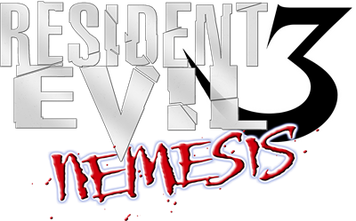
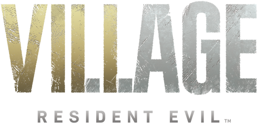
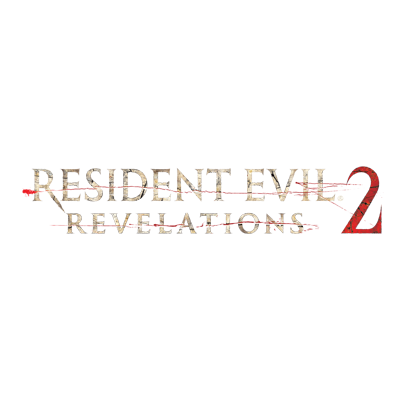

Resident Evil: O terror que mudou os games
Criado pela Capcom em 1996, Resident Evil (ou Biohazard no Japão) definiu o gênero survival horror. Enfrentando zumbis, vírus e corporações sombrias, os jogadores mergulham em uma narrativa intensa e cheia de reviravoltas. A franquia já ultrapassou 150 milhões de cópias vendidas e se expandiu para filmes, séries, quadrinhos e muito mais.
üéÆ Jogos da S√©rie Resident Evil

- 
- 
üìÖ Ordem Cronol√≥gica Can√¥nica
- 
üߨ Sinopse da Hist√≥ria
Tudo começa com experimentos secretos da Umbrella Corporation, uma poderosa empresa farmacêutica que cria o Vírus T, transformando humanos e animais em zumbis e monstros aterrorizantes. Após um surto em uma mansão isolada nos arredores de Raccoon City, a infecção se espalha rapidamente, levando ao colapso da cidade.
Com o passar dos anos, heróis como Chris Redfield, Jill Valentine, Leon S. Kennedy e Claire Redfield enfrentam diferentes ameaças biológicas ao redor do mundo — de vírus mutantes a organizações terroristas globais. A série evolui do terror claustrofóbico para grandes conspirações internacionais.
Mesmo com a queda da Umbrella, o perigo continua: novos vírus, novas armas biológicas e uma nova geração de horrores colocam a humanidade em risco.
Em meio ao caos, uma coisa é certa: o mal sempre encontra um novo hospedeiro.